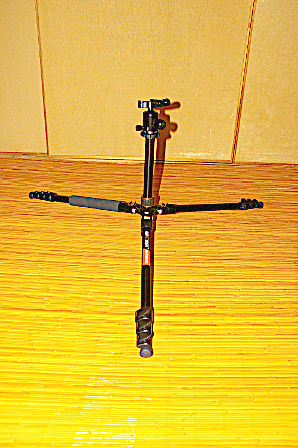

2018 年
09 月 08日 ( 土 )
K&F Concept KF-TM2324 お触りレポ
すでに過去の記事に登場していてさらには問題点まで書いているのですが、改めて K&F Concept の KF-TM2324 という三脚についてお触りレポを書きたいと思います。
この KF-TM2324 には下の写真のようにケースがついてきます。機動性がこれでよくなるのかどうかはよくわからないのですが、親切ではあります。KF-TM2324 を自宅に置いておく時は誰かがぶつかって怪我をするとあぶないのでこのケースに入れています。KF-TM2324 を外に持ち出す時は、と言ってもこれまでに 1 度しか持ち出していないのですが、このケースはお留守番してもらって KF-TM2324 はザックに入れていきました。
KF-TM2324 を普通に立てると下の写真のようになります。

K&F Concenpt KF-TM2434 という文字がかっこいいですね。メーカーの自信の程も感じられます。ちなみに一番太い脚部分の直径は 23mm です。ちょっと細いかな？でも私の PENTAX *ist DL2 を支えるのには充分でしょう。たぶん。

この KF-TM2324 ですが脚を 3 段階に広げることができます。下の写真は最も狭く広げた状態です。最も多用される角度じゃないでしょうか。
下の写真は 2 段目に広げた状態です。これも三脚を設置するスペースが物理的にも社会的にも許せば三脚が安定してなかなかいいんじゃないでしょうか。
最後は、後に述べる特別な方法を除いてカメラを最も低く設置することができる角度です。この三脚の広げ方を許してくれる物理的広さ、社会の忍耐力はかなり限られるんじゃないでしょうか。特に社会から見れば三脚もフォトグラファーも邪魔者以外の何物でもありませんから。低くカメラを設置したいなら小型の三脚を使ったほうがよさそうです。もちろん主に社会的な理由によりです。

三脚の脚は下の写真のゴールドのロックにより 3 段階にロックされます。この形式のロック方式は他の三脚でも導入されているとおり使用方法に特に難しいところはありません。
脚の長さを調整するロックはレバーロックが採用されています。私は KF-TM2324 の耐荷重が 10kg というのに惹かれてこの製品を買ったので、ロックはレバーロックでもナットロックでもこだわりがなく、どちらでもよかったのです。たまたま今回はレバーロックだったというだけです。
石突は特別な機構はなく普通にゴムのキャップが取り付けられているだけです。まぁ安い製品なので。

雲台は自由雲台が付属しています……付属っていうのかな？こういう場合？
小さい方のノブは水平方向の回転をとめるためのノブで、大きい方のノブはボールを固定するためのノブです。
クランプはアルカスイス互換のものがついています。このクランプには水準器がついており一応参考程度には使うことができます。が水準器に詳しい建築系の人によるとこんな小さな水準器に精度を求めるのは間違ってるそうなので (そもそも写真撮影にそれほどシビアな水平だしが必要なのかという話もありますが - 簡単に言うと目視でわからんかったらええやんとう話のような気も) あくまで参考程度にするのがよさそうです。
それでこの雲台ですが以前の記事でお話したとおり問題があります。耐荷重 10kg ということなので Canon EFS 17-55mm を取り付け、さらにバッテリーグリップを取り付けた Canon EOS 7D 約 2kg をこの雲台に取り付けると横アングルであれば下の写真のように普通に取り付けることができます。
しかしこの約 2kg を斜めアングルや縦アングルにしようとしたとたん、ボールジョイントが 2kg の重さに耐えられず下の写真のようにお辞儀をしてしまいます。下の写真を見る限りちゃんと縦アングルになってるように見えますが、これ傾いてます。それどころかカメラの重さ 2kg に引っ張られて三脚ごと倒れそうです。いや実際に倒れそうになりました。あわてて手で支えてカメラは無事でしたけど。

なので 2kg に達するカメラをどうしてもこの三脚で使いたい場合は L プレートを導入して下の写真のようにセンターポールから重心が外れないようにする必要があります。バッテリーパックのせいでこれでも重心がセンターポールから少し外れているのですけどね。
たった 2kg のカメラを支えられない耐荷重 10kg の雲台には耐えられないという人は、下の写真のように雲台を回すだけで取り外すことができますので、別のもう少しいい雲台に交換するというのも手です。ですがそうなってくると脚が支えることのできる重量というのも課題になってくると思うので (さっき三脚ごと倒れそうになったと言ったことを思い出して下さい)、正直バッテリーパック付きのカメラやフラグシップ機を取り付けたいなら RRS とか GITZO の三脚を素直にお勧めします。お高いですが。
それで KF-TM2324 のセンターポールはエレベーターになっていて、伸ばすことでカメラの位置を微調整できるようになっています。
エレベーターを利用する時は下の写真の真ん中に写っている、切れ込みが沢山入ったリングを緩めてやるとポールを伸ばしたり縮めたりすることができます。
さてせっかくの三脚、アウトドアでも使いたいですよね。というか三脚ってそもそもアウトドアで使うものでした。そうでした。私はアウトドアでも特に山に持っていきたいです。山の稜線上はだいたい強風が吹きまくっています。風のないときの方が珍しいです。そのような風のある中、そのままでは三脚は安定しません。GITZO システマティック 5 型みたいな例外もありますが。この KF-TM2324 ではそんなときのためにセンターポールにフックがついています。
下の写真のように、こいつに重い何かをぶら下げてやると三脚が安定するという理屈です。でも過酷な環境にまだ KF-TM2324 を連れて行ってやったことがないので効果の程は不明です。参考までに下の写真で KF-TM2324 にぶら下がってる重りは 2kg あります。実は膝を痛めたときのリハビリに使っていたトレーニング用のアンクルウェイトです。
さて、この稿の初めの方で「後に述べる特別な方法を除いてカメラを最も低く設置することができる」と書きました。ここではその特別な方法をお見せします。
KF-TM2324 では下の写真のようにセンターポールを三脚本体から取り外すことができます。
なぜこのように取り外すことができるのかというと、下の写真のようなことができるようにするためです。

こうすることでカメラを地面すれすれに設置して、超ローアングルで撮影ができるようになるのですね。
ただ気になるのは、これでレンズがバズーカのような超望遠、天体撮影用とかでしょうかね、そういったレンズがついたカメラでも支えることができるのでしょうか？私のシグマ DC 18-200mm のついた PENTAX *ist DL2 なら大丈夫だとは思いますけど。
ではまた次回に。
- Category :
- お触りレポ
- カメラ
- 写真
- 三脚
- K&F Concept
- KF-TM2324